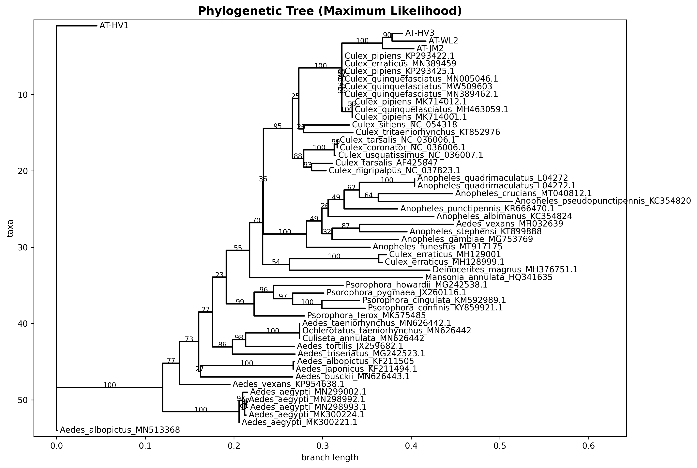

Phylogenetic Tree
Maximum likelihood tree showing evolutionary relationships
💡 Reading the Tree:
- Branch lengths: Evolutionary distance (substitutions per site)
- Bootstrap values: Statistical support (≥70% considered reliable)
- Topology: Shows relationships, not time
- Your samples: Compare with reference species to identify unknown specimens

Figure 1: Maximum likelihood phylogenetic tree constructed using IQ-TREE with 1000 ultrafast bootstrap replicates.
Best-fit model: GTR+F+I+R2 chosen according to BIC
Analysis Details
| Parameter | Value | Description |
|---|---|---|
| Method | Maximum Likelihood | Statistical method for inferring phylogeny |
| Software | IQ-TREE | State-of-the-art phylogenetic inference program |
| Bootstrap | 1000 ultrafast replicates | Measures confidence in tree topology |
| Model Selection | ModelFinder Plus (MFP) | Automatic selection of best-fit substitution model |
| Best-fit Model | GTR+F+I+R2 chosen according to BIC |
DNA substitution model used for tree inference |
Output Files
📁 Generated Files:
tree.treefile- Newick tree format (text file, open in FigTree)tree.png- Tree visualization (this image)tree.iqtree- Detailed analysis report with statisticstree.log- IQ-TREE execution log
🔬 Advanced Viewing with FigTree:
For interactive tree exploration with bootstrap values and branch lengths:
- Download FigTree (free phylogenetic tree viewer)
- Open
tree.treefilein FigTree - Enable "Node Labels" to display bootstrap support values
- Adjust "Branch Labels" to show evolutionary distances
- Export high-resolution images for publications